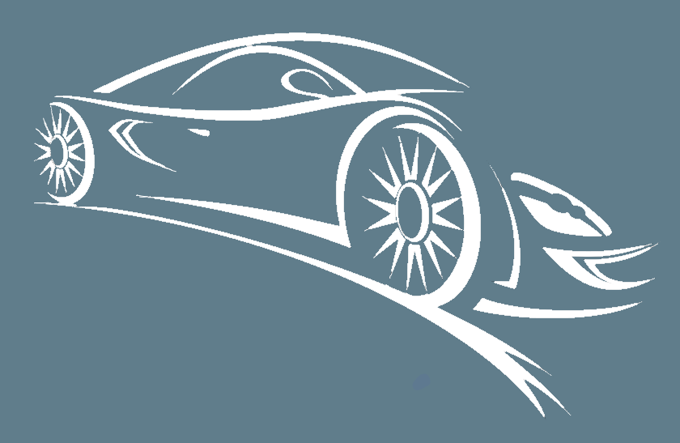

<mat-toolbar color="primary" fxLayout.xs="row" fxLayoutAlign.xs="space-between center">
  <div fxHide.gt-xs>
    <button mat-icon-button (click)="onToggle()">
      <mat-icon>menu</mat-icon>
    </button>
  </div>
  <div fxLayout="row" fxLayoutAlign="start center"></div>
  <div *ngIf="user" >Szia {{ user.username }}!</div>
  <div fxFlex fxLayout fxLayoutAlign="flex-end" fxHide.xs>
    <ul fxLayout fxLayoutGap="10px" class="navigation-items">
      <li><a routerLink="/cars" routerLinkActive="header__button--active" [routerLinkActiveOptions]="{exact:true}"><button mat-button>Autóink</button></a></li><span>|</span>
      <li><a routerLink="/faq" routerLinkActive="header__button--active" [routerLinkActiveOptions]="{exact:true}"><button mat-button>GYIK</button></a></li><span>|</span>
      <li><a routerLink="/contact" routerLinkActive="header__button--active" [routerLinkActiveOptions]="{exact:true}"><button mat-button>Elérhetőség</button></a></li><span>|</span>
      <li *ngIf="user?.role"><button mat-button [matMenuTriggerFor]="menu" >Profilom <mat-icon fontIcon="expand_more"></mat-icon></button>
        <mat-menu #menu="matMenu">
          <button mat-menu-item routerLink="/personals">Személyes</button>
          <a *ngIf="user?.role === 'admin'" routerLink="/users" mat-menu-item>Felhasználók</a>
          <button *ngIf="user?.role === 'admin'" routerLink="/orders" mat-menu-item>Foglalások</button>
          <button *ngIf="user?.role === 'user'" [routerLink]="['orders','user', user?.user_id]" mat-menu-item>Foglalásaim</button>
          <button mat-menu-item (click)="onLogout()">Kijelentkezés</button>
        </mat-menu></li>
      <li *ngIf="!user"><a routerLink="/signup" routerLinkActive="header__button--active" [routerLinkActiveOptions]="{exact:true}"><button mat-button>Regisztráció</button></a><span>|</span></li>
      <li *ngIf="!user"><a routerLink="/login" routerLinkActive="header__button--active" [routerLinkActiveOptions]="{exact:true}"><button mat-button>Bejelentkezés</button></a></li>
    </ul>
  </div>
</mat-toolbar>
